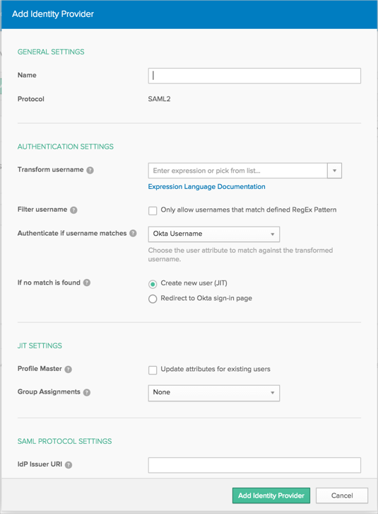
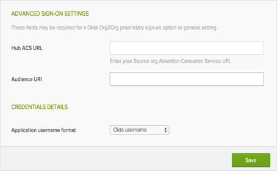
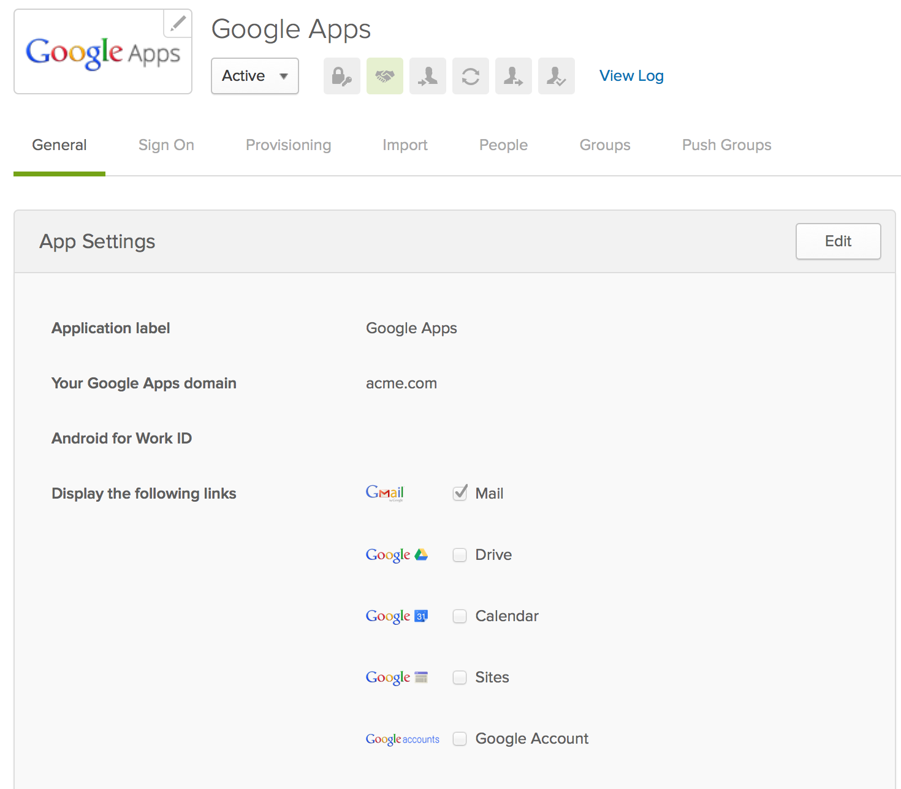
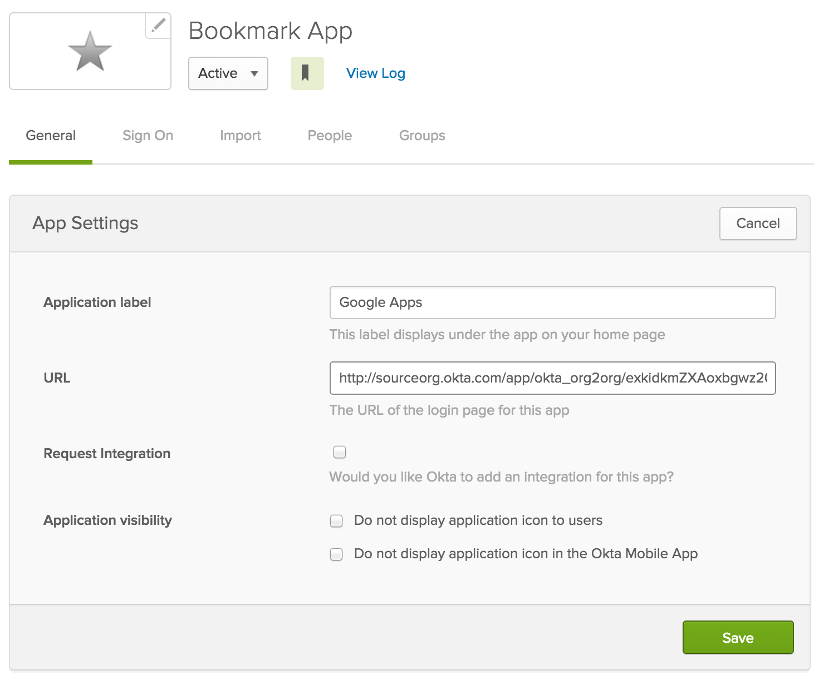

The Org2Org connector application is used to push/match users from one Okta organization to another. By configuring SAML for this application, users will be authenticated via SAML from one Okta organization to another. This application is used to master in the target (Hub) Okta organization, from the source (Spoke) Okta organization. The Org2Org application was specifically designed for a Hub/Spoke configuration.
Log into your Okta target organization (Hub) and select the Admin button.
Navigate to Security > Identity Providers, then click Add Identity Provider to create a new inbound SAML endpoint for the spoke/source affiliate.
Note: All inbound SAML configurations will be created using the spoke/source affiliates name.

Under General Settings:
Name: Enter the spoke/source name.
Under Authentication Settings:
Transform Username: Select from the drop down menu. This field specifies how to construct the subject's username from the SAML assertion using an Okta Expression Language transform of attributes defined in the IdP User Profile.
Filter Username: Optional regular expression pattern used to filter transformed usernames to prevent the IdP from authenticating unintended or privileged users.
Authenticate if username matches: Make desired selection from drop down. This field specifies what attribute(s) of existing users in Okta are compared to the transformed username to determine whether the authentication response is for a new or existing user. Choose the user attribute to match against the transformed username.
If no match is found: Make desired selection. If Create new user (JIT) is selected, a user's profile will be created in the target org if the user does not exist in the target org. This field specifies the action for authentication responses that do not match an existing user in the Okta organization.
Under JIT Settings:
Profile Master: Make desired selection. This field determines if the IdP should act as a source of truth for user profile attributes. The IdP must be prioritized with other Profile Masters if the user is assigned to additional apps or directories that are also Profile Masters. See Profile Mastering documentation for more information.
Group Assignments: Make desired selection. This field specifies the behavior of group assignments during provisioning.
Under SAML Protocol Settings:
IdP Issuer URI: Copy and paste the following:
Sign into the Okta admin app to have this variable generated for you.
IdP Single Sign On URL: Copy and paste the following:
Sign in to the Okta Admin app to generate this variable.
IdP Signature Certificate: Download, then upload the X509 Certificate (below):
Sign into the Okta admin app to have this variable generated for you.
Click Add Identity Provider/Save.
Once you save, you are returned to the main Identity Providers page.
Locate the Identity provider you just added. Copy the value for Assertion Consumer Service and paste it in the Hub ACS URL field in your source (spoke) Org2Org Application setup under the Sign On tab.
Copy the value for Audience URI and paste it in the Audience URI field in your spoke (source) Org2Org Application setup under the Sign On tab:
Click Save.

The following instructions enable users in the Spoke org(s) to login to an application that's managed and provisioned by a single Hub org.
The following example will walk you through the exact steps to perform, using Google Apps as an example.
Note: Test to ensure the application works correctly in the Hub before configuring the Spoke.
In the Hub org, configure the application that you want to share in spoke org. For this example, we used Google Apps with SAML sign on mode.

Log into your source Okta org (spoke), and go to the Admin console. Click on Add Application, then add Bookmark App.
Type in an Application label (Hint: Name of the application you are creating - Google Apps in case of our example).
You will need 3 things to construct the URL, as follows:
Copy and paste the IdP Single Sign On URL to the URL field, from Step 6 above, in the Configuring the Hub/Target Org (Inbound SAML).
Add ?RelayState=
Followed by the Embedded link of the application in the hub. The Embedded link can be found under the General tab for Google Apps, or any other application you are configuring.
For Example:
http://sourceorg.okta.com/app/okta_org2org/exkidkmZXAoxbgwz20g3/sso/saml?RelayState=http://huborg.okta.com/home/google/0oaiqwYT8RpdS8I6D0g3/26
Done!
Now users can seamlessly log in to Google Apps from spoke org; Google Apps is configured in hub org.